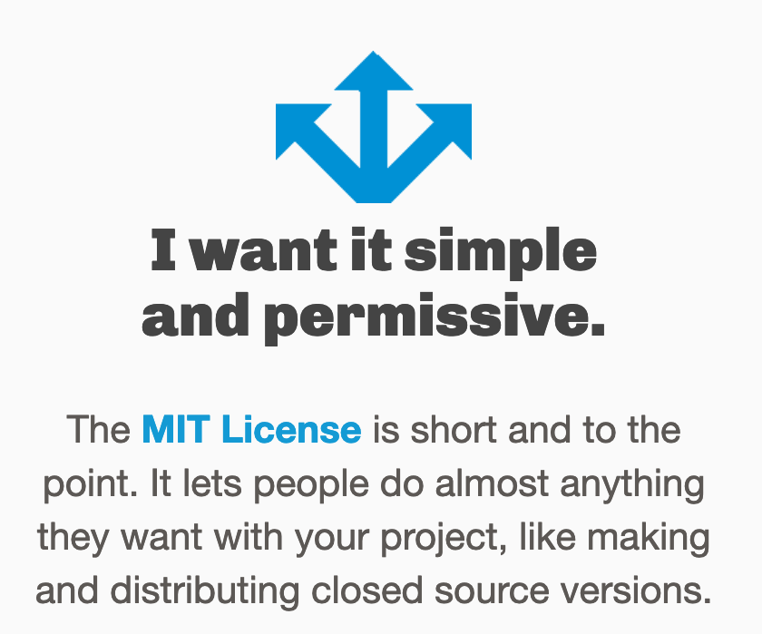

12 Licensing
Reusing other researcher’s work is inherent in science. Licensing plays a central role for reuse, so we should know how it works.
In my workshops on open and reproducible research licensing often comes up as a topic of fear.
What am I allowed to do? Should I better let the legal department decide? How do I avoid going to jail?
Most of the time choosing a license is actually quite simple. So let me help you loose your fear of it! ü§ó
Choosing a license for texts, data, media, …
I really like the Creative Commons licenses for most research outputs (and other things I produce, like this booklet).
They are easy to understand and to pick. On the CC-website you can find a simple tool to help you choose your license:
In research we want to almost always use the CC-BY or CC0 license.
- CC0 (also known as CC0 1.0 Universal) means that the output is in the public domain and can by used by everyone for anything.
- CC-BY (also known as Attribution 4.0 International) requires the user to give credit to the creator but gives freedom on what can be done with the output. This is the license I use 90% of the time.
Why not non-commercial?
CC-BY-NC is another license I often see used, but I do not like it in the context of research. Why? The “NC” for non-commerical prohibits commercial use for anyone but the owner. That means, for example, that educators (like me) cannot use it, if there are fees or commercial learning platforms involved. Even blogs and Wikipedia struggle with NC if there are commercial derivatives or components. Read more here.
Choosing a license for software
Software needs specific licenses. So for software there is another website you can use for choosing a license.
Again there is a license that works for most open projects: the MIT license.

That seems pretty simple, right? For more complex situations and when you have to worry about license compatibility of your code with software components that you use, please check out:
- The Turing Way chapter on License Compatibility
- Talk “All you need to know about Software Licenses” by Tobias Schlauch
Other
For other licenses, such as for hardware, choosealicense.com also has help for you: choosealicense.com/non-software
I hope this short intro to licensing was helpful to you! Please note that I am not a legal expert but a self taught open science enthusiast.